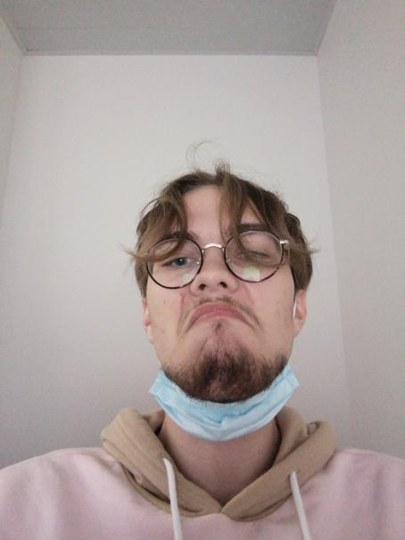

J'ai déjà travaillé sur 2 projets qui sont les suivants: un long niveau sur le logiciel Unity à l'aide du 3DGameKit, j'ai filmé le niveau et la vidéo dure donc environ 14 minutes. Mon second projet est plus une reproduction de level design sur UE4, j'ai reproduit la carte Anubis sur le jeu Overwatch. Ces deux projets m'ont beaucoup plu et j'ai tout autant apprécié le fait de découvrir les logiciels sur lesquels j'ai travaillé.
Je sors d'un BAC général avec les spécialités : Langue littérature, cultures étrangères et régionales/ Histoire, Géographie, Géopolitique, Science Politique. J'ai eu le bac avec mention assez bien, j'ai donc un profil littéraire. Je voudrais devenir level designer cependant si je découvre d'autres matières qui pourraient m'intéresser je serait très apte a changer de voie. J'èspere qu'au fil de cette année j'apprendrai plein de nouvelles choses et que j'aurai les capacités de faire un bon jeu de fin d'année. Enfin, mes jeux préférés sont World of Warcraft, Diablo2/3, j'aime également beaucoup de jeux indépendant(dernièrement Death's Door).
 Ilona